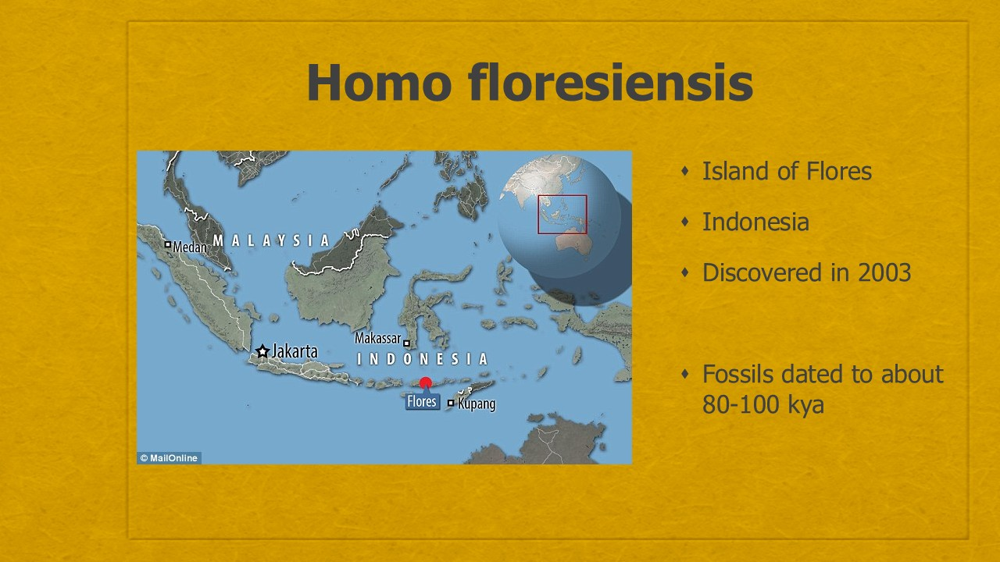
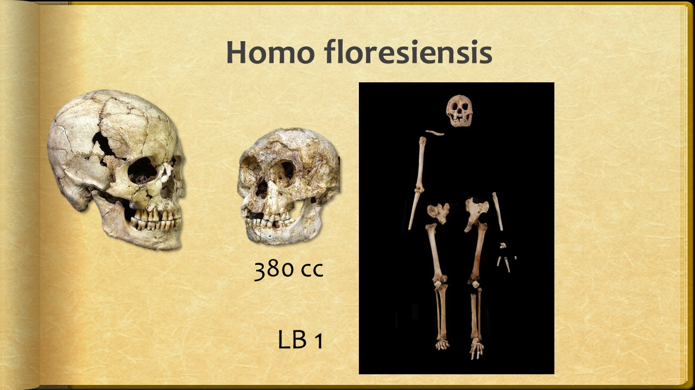
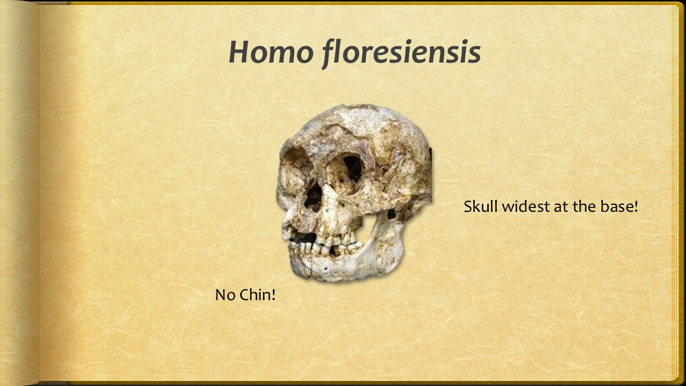
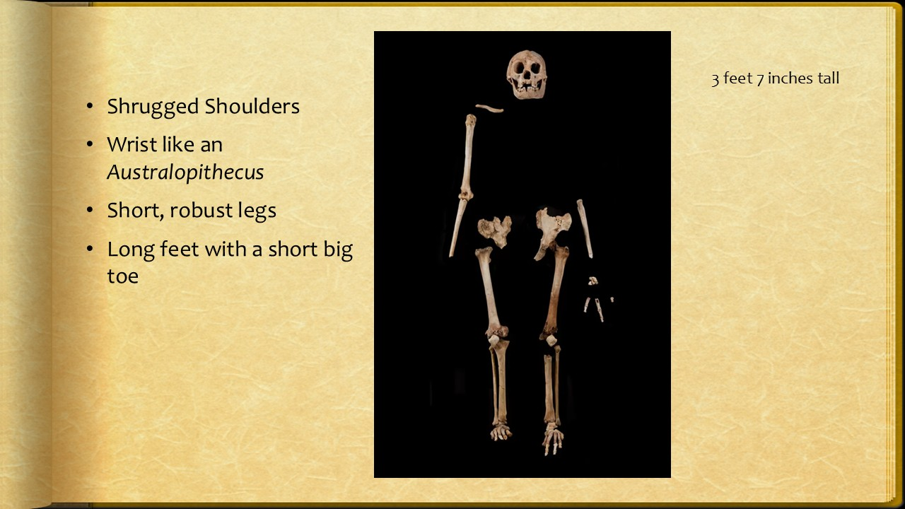
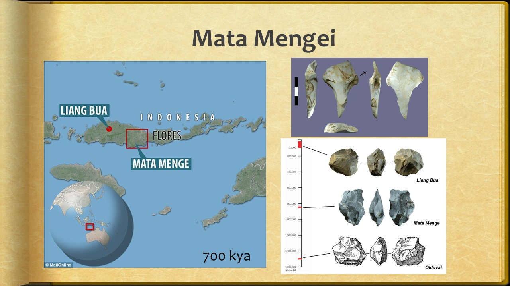
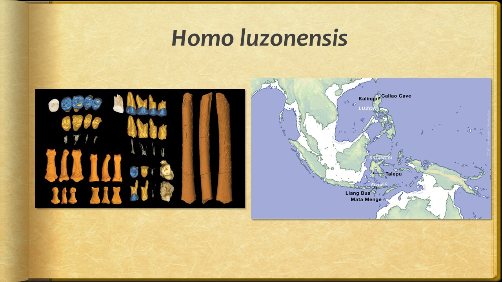

All lectures › Human Origins
L16.3 Homo floresiensis addendum
Slide 1

- Homo floresiensis
- ATH 255
- Spring 2022
- Addendum
Slide 2

- Homo floresiensis
- Island of Flores
- Indonesia
- Discovered in 2003
- Fossils dated to about 80-100 kya
Slide 3
- Ling Bua Cave
Slide 4

- Homo floresiensis
- LB 1
- 380 cc
Slide 5

- Homo floresiensis
- No Chin!
- Skull widest at the base!
Slide 6

- 3 feet 7 inches tall
- Shrugged Shoulders
- Wrist like an Australopithecus
- Short, robust legs
- Long feet with a short big toe
Slide 7

- Mata Mengei
- 700 kya
Slide 8

- Homo luzonensis